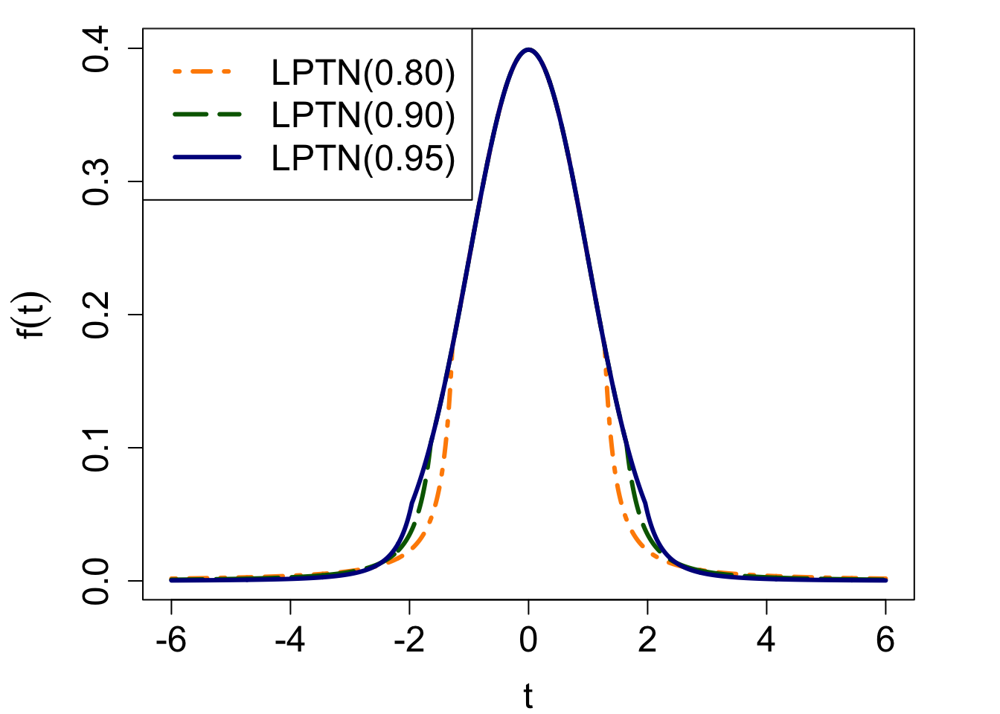

Chapter 4 Modern Robust M-estimators as heavy-tailed models
4.1 Introduction to LPTN
LPTN M-estimator, based on the LPTN ( log-Pareto-tailed-normal ) distribution, was first proposed in [Robustness to Outliers in Location-Scale Parameter Model Using Log-Regularly Varying Distributions](Desgagne 2015). Theoretically, LPTN M-estimator would be a robust estimator that can effectively protect model against outliers while still consider the valuable input of data entry of large variance. The original distribution proposed is more general, but for the purpose of this document, the distribution demonstrated below is introduced in (Philippe Gagnon, Alain Desgagné, and Bédard 2020), where we assume the error terms \(\epsilon_i\)s follows a LPTN distribution, denoted by \(LPTN(\varrho)\) with a pre-set controller parameter \(LPTN(\varrho) \in (2\Phi(1) − 1, 1) ≈ (0.6827, 1).\) Using the set up introduced in General Model (Section 2.1), the density \(f\) in (2.5) becomes
\[\begin{equation} f(t) = \begin{cases} \varphi(t), & \text{if}\ |t|\leq \tau, \\ \varphi(\tau)\frac{\tau}{|t|}\left(\frac{\log(\tau)}{\log|t|}\right)^{\lambda+1}, &\text{if}\ |t|>\tau, \end{cases} \tag{4.1} \end{equation}\]
where \(t\in\mathbb{R}\), and \(\lambda>0\) and \(\tau>1\) are functions of \(\varrho\):
\[\begin{align} &\tau = \Phi^{-1}((1+\varrho)/2):=\{\tau:\mathbb{P}(-\tau\leq\mathbb{Z}\leq\tau)=\varrho \; \text{for} \; \mathbb{Z} \; \overset{D}{\sim} \mathcal{N}(0,1)\}, \\ &\lambda = 2(1-\varrho)^{-1}\varphi(\tau)\tau\log(\tau). \end{align}\]
\(\varphi()\), \(\Phi()\), and \(\Phi^{-1}()\) are respectively the PDF, CDF, and inverse CDF of the standard Gaussian normal distribution.
As we adjust the pre-set parameter \(\varrho\), we change how close the LPTN distribution approximates the standard normal distribution. As \(\varrho\) increases, \(f\) approaches the normal. An increase in \(\varrho\) also implies an increase in \(\lambda\) and \(\tau\), which translates into a density \(f\) with lighter tails. Efficiency is also expected to increase, but robustness to decrease. A compromise has therefore to be made and it is controlled by the statistician through the parameter \(\varrho\). In other words, this parameter represents the tolerance to (bounded) impact from outliers at the benefit of efficiency when the data set is not contaminated.
For example, the center of the density (the area \(|z| ≤ \tau\)) was given by \(K(\rho,\lambda)\varphi(z)\). In order to pursue our efficiency objective, we set the constant to 1, which in return forces λ to be automatically set as a function of ρ. The parameter ρ, chosen by the user, thus represents the mass of the central part that exactly matches the N (0, 1) density.
So to research on the EFFCIENCY properties of LPTN, we have to know evaluate its performance given different DATA GENERATING CRITERIAs--- so what we need is simulation experiments? to assume the data sets are generated under different poluations, maybe as what we do in
• Scenario 0: f = N (0, 1),
• Scenario1:f=95%N(0,1)+5%N(7,1), • Scenario2:f=90%N(0,1)+10%N(7,1),
• Scenario 3: f = 95% N (0, 1) + 5% N (3, 1), where the xi of the outliers are modified
to make them high-leverage points (the procedure is explained in detail below),
• Scenario 4: f = 90% N (0, 1) + 10% N (3, 1), where the xi of the outliers are modified to make them high-leverage points.
But how can we achieve that? the data set SHOCK is fixed. to try my best I could evaluate the robustness in \beta when one or some outliers are extracted to the infinity, But how to make it following some certain true population if still using shock data.The user can also select its value based on prior opinion about the probable proportion of outliers, by setting it to 1 minus this proportion.
The rationale behind proposing the LPTN is thus that, in addition to exactly matching the normal density on the part with highest probability, this distribution has log-Pareto tails ensuring that our theoretical robustness result hold, and this for any value of \(\ρ\). This type of tails consequently accommodates for a large spectrum of \(\alpha\) and \(F_0\) in the mixture (3.1) when \(\alpha < 1\) and generates efficient inference when \(\alpha = 1\) as well (this latter characteristic is discussed in Section 3.2). A comparison between different LPTN densities is shown in Figure 2.
For better visualization, we plot the LPTN distribution with \(\varrho\) equals to 0.80, 0.90, and 0.95 below.

For the example, firstly we set the \(\varrho\) at the value of 0.80, hence we could compute the LPTN M-estimator respectively associated with LPTN(0.80), LPTN(0.90), LPTN(0.95), i.e., with \(\varrho\) equals to 0.80, 0.90, 0.95. The estimates for \(\boldsymbol\beta\) and \(\sigma\) are respectively summarized as follows:
| Starting Estimation Method Chosen | \(\sigma^{LPTN(0.8)}\) | \(\hat\beta_0^{LPTN(0.8)}\) | \(\hat\beta_1^{LPTN(0.8)}\) |
|---|---|---|---|
| MM | 0.4069192 | 7.974943 | -0.4230413 |
| Huber | 2.2268981 | 9.561654 | -0.5153956 |
| Bisquare | 0.4069192 | 7.974942 | -0.4230412 |
| OLS | 2.2306432 | 9.556700 | -0.5153846 |
| OLS\(points removed) | 0.4069192 | 7.974942 | -0.4230413 |
p5<-p4+geom_abline(intercept=7.974942,slope= -0.4230413,color="red")
p5 The LPTN(0.80) \(M\)-estimator fit is shown below alongside other estimators discussed before. Follow professor gagnon’s advice, the LPTN estimators with MM-estimation as the starting point provides a very good fit, closely resembling the level of accuracy as the fit provided by the Bisquare M-estimator. We showed the LPTN fitted line in red above.
For now, we should have noticed importance of choosing a starting point, which is also mentioned in the Theoretical Foudation of Computing section. High quality will be really important. Great thanks to Professor Gagnon’s advice, we select the method the MM-estimation to derive our starting point. The dicussion on MM-estiamtion is arraged in the later section. Although this new type of estimators looks like a twin of our M-estimators, they do have much difference.
4.2 Robustness when using LPTN
while illustrating the theoretical results of Theorem 1. First we show that, when we artificially move an observation, its impact on the estimation grows until it reaches a certain threshold. Beyond this threshold, the impact decreases to nothing as the observation approaches plus or minus infinity.
Second, a more traditional Bayesian analysis is made, in which we study the proportion of income spent on food. More precisely, we present the posterior distributions, with particular emphasis on the impact of outliers, and we compute various estimates from the posteriors.
First we show that, when we artificially move an observation, its impact on the estimation STAYS THE SAME
The intercept estimate \(\hat{\boldsymbol\beta_{1}}^{LPTN(0.80)}\) in a simple linear regression as an observation \(y_3^{∗}\) goes from 0 to 50
The LPTN slope estimate \(\hat{\boldsymbol\beta_{1}}^{LPTN(0.80)}\) in a simple linear regression as an observation \(y_3^{∗}\) goes from 0 to 50
Question
to extract some points to the infinity to research on the robustness of LPTN M-estimators
but pull which one and
how many should be pulled
the lptn should be estimated at assuming varrho equal to how much?
I , not surprisingly find that no matter which varrho set by me, the movement of the outlier do not affect it at allLPTN M-estimators using Different methods as Starting Point
| Starting Estimation Method Chosen | \(\sigma^{LPTN(0.8)}\) | \(\hat\beta_0^{LPTN(0.8)}\) | \(\hat\beta_1^{LPTN(0.8)}\) |
|---|---|---|---|
| MM | 0.4069192 | 7.974943 | -0.4230413 |
| Huber | 2.2268981 | 9.561654 | -0.5153956 |
| Bisquare | 0.4069192 | 7.974942 | -0.4230412 |
| OLS | 2.2306432 | 9.556700 | -0.5153846 |
| OLS(updated)) | 0.4069192 | 7.974942 | -0.4230413 |
| Starting Estimation Method | \(\sigma^{LPTN(0.9)}\) | \(\hat\beta_0^{LPTN(0.9)}\) | \(\hat\beta_1^{LPTN(0.9)}\) |
|---|---|---|---|
| MM | 0.6028035 | 8.149284 | -0.4301010 |
| Huber | 1.7350153 | 9.561538 | -0.5153846 |
| Bisquare | 0.6028035 | 8.149284 | -0.4301009 |
| OLS | 1.7350155 | 9.561538 | -0.5153846 |
| OLS(updated)) | 0.6028041 | 8.149278 | -0.4301004 |
| Starting Estimation Method | \(\sigma^{LPTN(0.95)}\) | \(\hat\beta_0^{LPTN(0.95)}\) | \(\hat\beta_1^{LPTN(0.95)}\) |
|---|---|---|---|
| MM | 1.641843 | 9.742046 | -0.5521902 |
| Huber | 1.641843 | 9.742046 | -0.5521902 |
| Bisquare | 1.641844 | 9.742046 | -0.5521901 |
| OLS | 1.641844 | 9.742046 | -0.5521901 |
| OLS(updated) | 1.641844 | 9.742046 | -0.5521902 |
while \(\hat{\boldsymbol{\beta}}_{OLS-},\hat\sigma_{OLS-}=(7.2152 ,-0.3198 )\)
This demonstrates a good starting point is superly important.
Different starting points using the same LPTN(\(\varrho\)) might be hugely different.
When \(\varrho\) is closer to 0.95, it is more robust since it even allows different starting points to converge round the same place.
When \(\varrho\) is closer to 0.95, it is more closer to \(\mathcal{N}\)